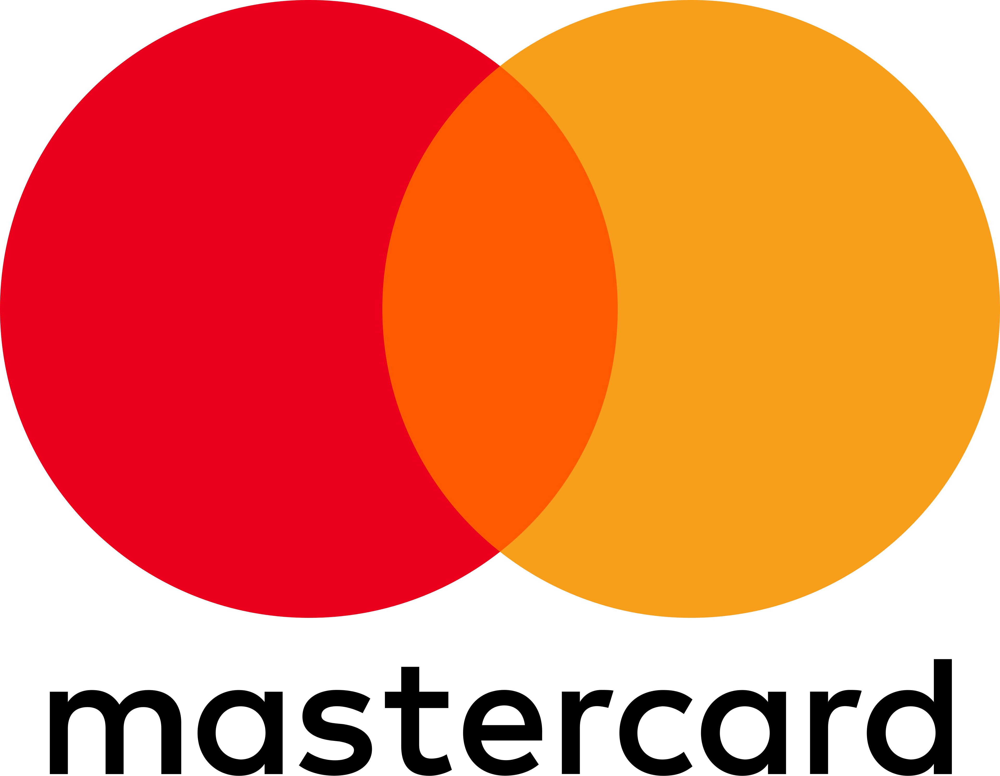
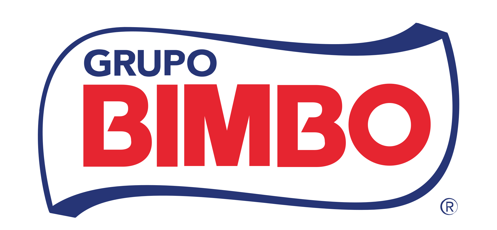
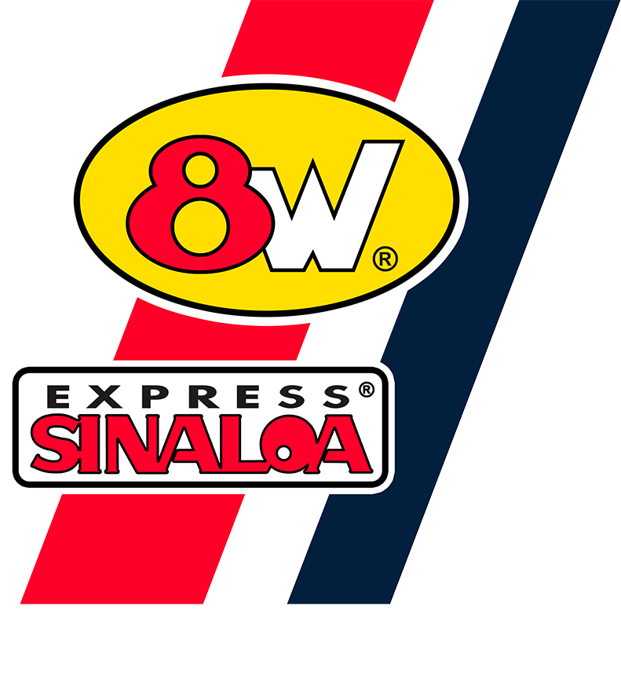

Fleet
800
Units · national coverage
 ×
Draiver
×
Draiver
Document prepared for Armando Flores and the Draiver executive team following our conversation on April 30.
//UV-028/2026What we saw in our last contact and why it's worth hearing us out.
How it looks today in operations like yours and what we propose.
Capabilities by operational category, how we fit into your stack, and what makes us distinct.
What happened with a comparable fleet + portfolio of clients with a similar profile.
Expected return, next steps. Q&A live.
//UV-028/2026
Strategic partner + investor.
Also backed by 468 Capital · 6 Degrees Capital · Numundo Ventures · 17Sigma.
+50 fleets · from 200 to 2,000+ units




Recurring usage-based fee, no commission on recovered spend.
Open APIs — your IT team consumes them from the system you already have.


 //UV-028/2026
//UV-028/2026It's not inefficiency or carelessness. It's how the current providers' models are built.
Reconciliations done by hand that nobody reviews. Errors in invoices, tolls and expense reports that turn into accepted cost.
Information arrives days late. By the time the problem is detected, it has already happened — no real-time alerts, no market benchmarks.
One vendor per category. Each one charges commission and licensing — none of them see the full system.
//UV-028/2026Across 9 prior diagnostics in operations of comparable size. Observed range: 3% – 8%.
None required changing providers to start recovering.
The driver fills up where the network reaches, not where it's cheapest. The average price above the open market is structural to the provider's model. → Analysis ↗
Double charges, axle errors and miscoded toll booths that nobody reconciles — manual cross-checks against GPS and trip logs aren't viable. → Analysis ↗
Each driver transaction generates a provider commission on top of the amount. At scale, that cost is recoverable with a different payment model. → Analysis ↗
Funds loaded into the closed-loop card = 1–2 months of OPEX immobilized, not auditable, not usable for treasury. → Analysis ↗
//UV-028/2026Manual work → Automation · Reactive control → Real time with AI · Fragmentation → Centralization.


Drivers don't download apps. Receipts, authorizations, alerts and support all through chat. One single layer for the whole fleet — designed for high turnover.
//UV-028/2026Yes, we issue a Mastercard corporate card. It's one financial instrument among several, like the credit line or cash management. The product is the software layer that orchestrates all those instruments on top of the trip-level expense plan.
Your capital sits idle for 1–2 months, and they charge commission on every transaction.
Any modern corporate card platform covers that.
Any bank covers that. We do issue one — but it's one instrument the software operates, decides on, and automatically reconciles with your ERP.
The operational layer of your finances on the road — where everything starts with a trip or an expense plan.
Your team integrates Uvicuo with your existing stack. Compatible with SAP, Oracle, Epicor, Odoo and in-house systems.
Your stack stays the brain. Uvicuo is the financial and operational layer that connects to it — without renegotiating or migrating what you already have.
If your operation has a fleet and operational expenses on the road — fuel, tolls, per diems, cash — this makes sense. If you're 100% office, it doesn't.
//UV-028/2026
What bothers me most isn't the money.
It's that we had it on our statements and nobody saw it.



Each one went through the same diagnostic. The next step for Draiver is on the next slide.
//UV-028/2026Mexican tax deductibility recovery alone (PEX, Airbase) · 3% of OPEX
Average observed in comparable operations · 5.6% of OPEX
5 levers confirmed when reviewing invoices · 8% of OPEX
~$45K MXN recoverable per recurring driver per year in the base scenario — concentrated in Mexican tax deductibility recovery (PEX, Airbase) and replacing the toll-tag front (Televía).
The commercial model lives in the diagnostic document. We share it when it makes sense to continue — it includes a 3% minimum guarantee or we don't bill.
//UV-028/2026With CFO and Head of Operations. Iker Haro, CEO of Uvicuo, joins personally — Draiver is one of the few profiles we treat as a strategic account this year, and he prefers to lead the conversation directly.
He presents the range specific to your operation, answers questions live, and leaves a single decision on the table. No additional documents — this deck is the material.